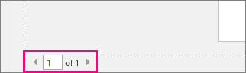
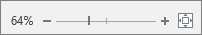
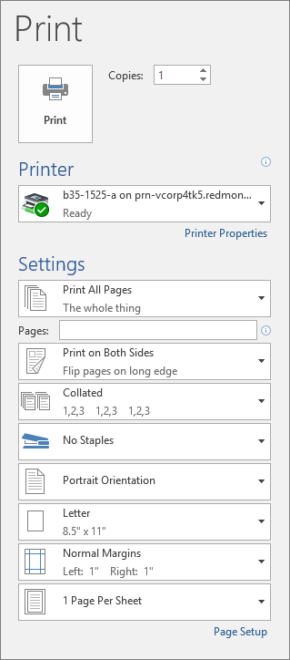

Before you print, you can preview your document and specify which pages you want to print.
Click File > Print.
To preview each page, click the forward and backward arrows at the bottom of the page.

If the text is too small to read, use the zoom slider at the bottom of the page to enlarge it.

Choose the number of copies, and any other options you want, and click the Print button.
